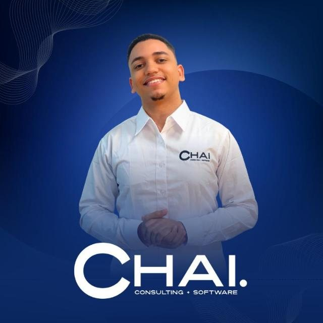

Implementación de Odoo ERP
Integra las principales áreas de tu empresa en una plataforma: contabilidad, ventas, CRM, compras, inventario, proyectos y RR. HH. Te acompañamos en el análisis, la configuración, la puesta en marcha y la capacitación.
Impulsamos la transformación digital de las empresas mediante la implementación de Odoo ERP, la automatización de procesos y el desarrollo de soluciones tecnológicas adaptadas a sus necesidades.
Conectamos tus operaciones, optimizamos tus recursos y te ayudamos a tomar decisiones con mayor claridad.
Cuando los procesos dependen de tareas manuales, información dispersa o sistemas que no se comunican, el crecimiento se vuelve más complejo. Convertimos las oportunidades de mejora en soluciones tecnológicas prácticas, integradas y escalables.
Integra las principales áreas de tu empresa en una plataforma: contabilidad, ventas, CRM, compras, inventario, proyectos y RR. HH. Te acompañamos en el análisis, la configuración, la puesta en marcha y la capacitación.
Evaluamos tus necesidades, configuramos la solución y preparamos tus procesos para emitir y gestionar comprobantes fiscales electrónicos, según los requerimientos aplicables de la DGII.
Dirección clara, objetivos definidos y ejecución organizada: alcance y prioridades, coordinación de equipos y seguimiento de etapas y entregables.
Cuando las soluciones estándar no cubren todo, creamos adaptaciones funcionales, funcionalidades específicas e integraciones, según viabilidad y alcance.
La tecnología genera más valor cuando las personas saben usarla. Capacitación a usuarios, orientación funcional y acompañamiento según el alcance contratado.
¿Usas distintas herramientas para tus ventas, inventario, contabilidad y clientes? Con Odoo puedes integrar múltiples áreas en un entorno de gestión empresarial, reduciendo la dispersión de la información y facilitando la coordinación entre equipos.
Registros financieros organizados.
Oportunidades, cotizaciones y pedidos.
Visibilidad de existencias y proveedores.
Actividades, responsables y seguimiento.
Nicole Bonilla, CEO, sobre lo que Odoo puede hacer por tu empresa.
Reduce tareas repetitivas con flujos mejor organizados y automatizaciones apropiadas.
Facilita el acceso a datos de las operaciones y reduce la dependencia de registros aislados.
Mayor visibilidad de los movimientos de mercancía y de la información para gestionar existencias.
Organiza procesos contables y facilita el seguimiento de transacciones y reportes.
Aprovecha información operativa y financiera para evaluar el desempeño y los objetivos.
Incorpora aplicaciones y funcionalidades según la evolución del negocio.
Los resultados concretos dependen de los procesos de partida, la configuración, los datos y el alcance de cada implementación.
Tecnología que trabaja contigo, todos los días.
La facturación electrónica forma parte de la modernización del sistema tributario dominicano. Preparar tu empresa requiere considerar las obligaciones aplicables, tus procesos administrativos y las herramientas que utilizarás.
En CHAI te ayudamos a evaluar las necesidades de tu negocio y a preparar una solución tecnológica que facilite la gestión de los comprobantes fiscales electrónicos (e-CF).
Conversemos sobre tu situación actual y las alternativas tecnológicas adecuadas.
Los requerimientos y plazos dependen de la clasificación del contribuyente y de las disposiciones vigentes. La implementación tecnológica debe verificarse frente a los requisitos aplicables de la DGII.
Una gestión contable eficaz requiere información confiable, procesos definidos y herramientas que faciliten el seguimiento. Mediante Odoo y las configuraciones o adaptaciones que correspondan, ayudamos a organizar los procesos contables y a mejorar la información disponible para la administración y el análisis financiero.
Reportes relacionados con los formularios, cuando estén cubiertos por la localización o configuración correspondiente:
El alcance de cada reporte, su automatización y su compatibilidad con los requerimientos vigentes se validan durante el análisis funcional.
Conocemos los procesos y documentamos los requerimientos principales.
Definimos alcance, prioridades, funcionalidades y etapas.
Preparamos la solución con las adaptaciones acordadas.
Verificamos los procesos y orientamos a los usuarios.
Apoyamos la transición conforme al alcance contratado.
Dentro de mis experiencias he trabajado en el sector financiero y administrativo, formando parte de equipos de contabilidad y finanzas en varias instituciones, siendo este uno de los impulsos más importantes en toda mi vida.
De un tiempo hacia acá he estado trabajando en lo que más me apasiona, que es la tecnología, dedicando mis días a ayudar a otros a que puedan tener mejores procesos y resultados mediante implementaciones de soluciones destinadas a ello, siempre de cara a la vanguardia.
He podido alcanzar niveles superiores en ámbitos como la comunicación, siendo este uno de los plus más importantes que me destacan.

Tu operación es única. Tu solución debe responder a ella.
Una plataforma de aplicaciones empresariales para gestionar ventas, CRM, contabilidad, inventario, compras y proyectos. Las aplicaciones dependerán de tus necesidades y la edición seleccionada.
Sí. Odoo ofrece opciones de configuración y personalización; el alcance depende de tus procesos, funcionalidades y la viabilidad técnica.
El proyecto puede planificarse por fases, siempre que el alcance, las dependencias y los procesos estén bien definidos.
CHAI puede evaluar tus necesidades y orientar la implementación tecnológica. La solución concreta debe validarse según los requerimientos vigentes de la DGII.
No necesariamente. El análisis funcional identifica qué procesos mantener, mejorar, estandarizar o adaptar.
Puede formar parte del alcance del proyecto para facilitar el uso de la plataforma y la adopción de los usuarios.
Cuéntanos qué procesos deseas optimizar, qué dificultades enfrenta tu equipo o qué solución tecnológica tienes en mente.